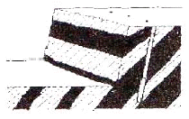
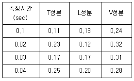
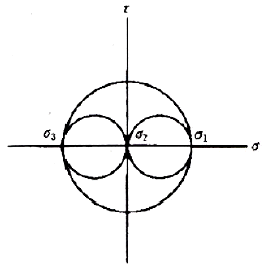
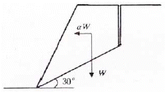
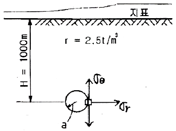
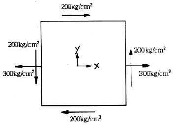
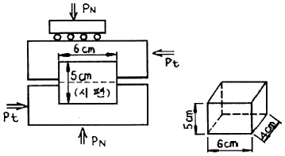
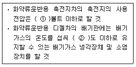

화약류관리기사 (2012-03-04 기출문제)
1과목: 일반화약학
1. 산소 평형값이 0 인 화약이 완전폭발하게 되면 이론적으로 어떤 종류의 가스들이 발생하는가?
- 일산화탄소, 탄산가스, 질소
- 수증기, 탄산가스, 질소
- 과산화질소, 수증기, 탄산가스
- 일산화탄소, 탄산가스, 수증기
(정답률: 65%)

2. 가열에 의하여 산소를 내는 것으로 산소공급제에 해당하는 것은?
- 과염소산칼륨
- 황산
- 식염
- 질산
(정답률: 95%)
3. 도화선의 내수성 시험에서 시료는 물 속에 몇 시간이상 담근 후 꺼내어 시험해야 하는가?
- 0.5
- 1
- 1.5
- 2
(정답률: 72%)
4. 화약류 감도시험에 대한 연결이 틀린 것은?
- 열에 관한 감도 - 발화점시험
- 폭발에 대한 감도 - 순폭시험
- 충격감도 - 폭속시험
- 마찰감도 - 유발시험
(정답률: 84%)
5. 화약류를 조성에 의한 분류에서 혼합화약류에 속하지 않는 것은?
- 흑색화약
- 에멀젼 폭약
- ANFO
- 테트라센
(정답률: 73%)
6. 안정도 시험만으로 이루어진 것은?
- 내열시험, 가열시험
- 마찰강도시험, 헤스맹도시험
- 도화선시험, 탄동진자시험
- 탄동구포시험, 낙추시험
(정답률: 100%)
7. 다음 중 안포(ANFO)폭약의 배합성분에서 연료유와 질산암모늄의 배합비율로 가장 적절한 것은?
- 10 : 90
- 15 : 85
- 6 : 94
- 20 : 80
(정답률: 80%)
8. 지진 탐광용 전기뇌관의 경우 전교와 절단과 첨장약 기폭의 시간차가 얼마 미만이어야 하는가?
- 0.1ms 미만
- 0.2ms 미만
- 0.3ms 미만
- 0.4ms 미만
(정답률: 50%)
9. 다음 중 수중 발파에 가장 적합한 폭약은?
- 흑색화약
- 초안폭약
- 초유폭약
- 슬러리폭약
(정답률: 100%)
10. 다음 중 산소평형 값이 가장 큰 것은?
- 니트로글리콜
- 니트로글리세린
- 테트릴
- 피크린산
(정답률: 87%)
11. 3단법으로 TNT 를 제조할 때 반응온도로 옳은 것은?
- 1차 온도 30℃
- 2차 온도 85℃
- 3차 온도 50℃
- 1, 2, 3차 모두 45℃
(정답률: 95%)
12. 도폭선의 폭속 범위로 가장 적합한 것은?
- 1000 ~ 2500m/s
- 2500 ~ 4000m/s
- 4000 ~ 5500m/s
- 5500 ~ 7000m/s
(정답률: 86%)
13. 어떤 폭약의 약포 직경이 30mm 일 때 사상 순폭도가 12이었다면 순폭거리는 몇 mm 인가?
- 2.5mm
- 40mm
- 360mm
- 400mm
(정답률: 95%)
14. 니트로글리세린의 비중 값에 가장 가까운 것은?
- 0.6
- 0.9
- 1.6
- 1.9
(정답률: 74%)
15. 건조 상태에서의 니트로화합물과 질산에스테르의 자연분해 안정성에 대한 설명으로 옳은 것은?
- 니트로화합물이 더 안정하다.
- 질산에스테르가 더 안정하다.
- 모두 안정하다.
- 모두 불안정하다.
(정답률: 65%)
16. 목분을 연소시킬 때 약 961L 의 산소가 부족하여 산소공급제로 KNO3를 사용하고자 한다. 이 때 첨가할 KNO3 는 약 몇 kg 인가? (단, KNO3 1kg 당 산소는 277L 가 발생한다.)
- 1.5
- 2.5
- 3.5
- 4.5
(정답률: 90%)
17. 흑색 화약에 대한 설명 중 옳은 것은?
- 화염과 마찰에 둔감하다.
- 장기간 저장이 가능하다.
- 후가스가 좋아 터널 공사에 가장 적합하다.
- 인화성이 있으므로 흡습되어도 발화에는 지장이 없다.
(정답률: 69%)
18. 한국산업규격에서 정한 8조 전기뇌관의 품질시험 항목이 아닌 것은?
- 내수시험
- 점화전류시험
- 내정전기시험
- 납기둥시험
(정답률: 78%)
19. 폭속에 관한 설명으로 옳은 것은?
- 폭속이 큰 폭약일수록 파괴력은 작아진다.
- 약포의 지름이 크면 폭속은 작아진다.
- 밀폐도가 높을수록 폭속은 크게 된다.
- 충전 비중을 작게 하면 폭속은 크게 된다.
(정답률: 95%)
20. 붉은 불꽃을 발생하므로 위험신호를 알리는데 사용하는 신호염관(Fire signal)의 주성분은?
- 과염소산암모늄 + 질산암모늄
- 염소산암모늄 + 질산암모늄
- 과염소산암모늄 + 질산스트론튬
- 질산암모늄 + 질산나트륨
(정답률: 100%)
2과목: 발파공학
21. 심발공의 지름은 모두 같고, 저항선과 15° 각도를 가지며 심발공의 저항선이 2.4m 확대발파공의 신자유면에 대한 저항선이 0.8m 일 때 소요 심발공수는 얼마인가?
- 2공
- 4공
- 6공
- 8공
(정답률: 40%)
22. 압축강도가 2500kgf/cm2 이고, 인장강도가 80kgf/cm2 인 신선한 암반에 선균열 발파를 실시하기위하여 발파공을 천공하였다. 발파공 내에 작용하는 압력이 1000kgf/cm2 이라면 공간격은 얼마로 하여야 하는가? (단, 발파공경은 75mm 이다.)
- 87cm
- 75cm
- 53cm
- 25cm
(정답률: 11%)
23. 다음 중 대괴를 얻기 위한 발파방법으로 맞는 것은?
- 주상장약(column charge)을 감소시킨다.
- 천공간격을 저항선보다 상당히 크게 한다.
- 지발발파를 실시한다.
- 보조 천공을 실시하고 전색장을 줄여서 발파한다.
(정답률: 18%)
24. 전파속도가 400m/sec이고, 진동수가 10Hz인 진동의 진폭을 절반으로 감소시키려할 때 적절한 방진구의 깊이는 얼마로 하여야 하는가?
- 4m
- 6m
- 8m
- 10m
(정답률: 20%)
25. 다음 그림은 암반 불연속면의 구조와 천공상태에 대한 것이다. 불연속면의 방향과 천공상태에 따른 발파효과의 설명으로 옳지 않은 것은?

- 폭약의 에너지를 효과적으로 이용할 수 있다.
- 파쇄암의 이동이 좋으므로 긁어 모으기가 좋다.
- 후방 초과굴착현상(Back Break)의 발생이 우려된다.
- 바닥에 그루터기(toe)가 많이 남을 우려가 있다.
(정답률: 59%)
26. 수중발파 시 충격압의 제어 목적으로 사용되는 에어버블커튼(air bubble curtain)의 효과에 영향을 미치는 인자에 속하지 않는 것은?
- 입사 압력의 방향
- 기포의 크기
- 입사 압력의 파형
- 기포의 밀도
(정답률: 24%)
27. 팽창성 파쇄제를 사용한 파쇄설계에 있어 천공간격 결정시 필요한 항목이 아닌 것은?
- 파쇄체의 압축강도
- 파쇄체의 종류
- 천공경
- 팽창압
(정답률: 32%)
28. 터널 발파에서 직경 57mm의 무장약공 2개를 사용하여 평행공 심빼기 발파를 수행하고자 할 때 적절한 천공장은 얼마인가? (단, 무장약공과 심빼기 공의 천공장은 동일하고, 굴진율은 약 95%이다.)
- 1.97m
- 2.65m
- 3.53m
- 3.93m
(정답률: 34%)
29. 다음 중 트렌치 발파에 대한 설명으로 옳지 않은 것은?
- 도심지에서 상 ㆍ 하수도 등을 설치하기 위해 실시한다.
- 일반적으로 계단의 폭이 4m보다 작으면 트렌치 발파라고 한다.
- 트렌치 발파는 계단의 높이가 계단의 폭에 비해서 작다는 것이 특징이다.
- 트렌치 발파는 수직천공을 피하고 경사천공을 실시해야 한다.
(정답률: 35%)
30. 다음 중 지반진동에 대한 설명으로 옳지 않은 것은?
- 지반진동은 일반적으로 입자속도 V, 변위 D, 가속도 A, 3성분과 주파수 f로 표시된다.
- 입자속도는 변위의 시간에 대한 변화 비율이며, 이것은 변위진폭으로 표시된다.
- 가속도는 입자속도의 시간에 대한 변화 비율이며, 이것은 가속도진폭으로 표시된다.
- 지반진동을 정현진동으로 볼 경우 최대진폭에서의 속도는 V=2πfD로 나타낼 수 있다.
(정답률: 36%)
31. 다음은 어느 발파현장에서 발파진동을 측정한 결과이다. 최대벡터합(PVS)은 얼마인가? (단, 진동측정단위는 cm/sec)

- 약 0.50 cm/sec
- 약 0.45 cm/sec
- 약 0.43 cm/sec
- 약 0.41 cm/sec
(정답률: 27%)
32. 터널발파에서 천반공, 측벽공 및 바닥공과 같은 윤곽공들은 윤곽 밖으로 경사지게 천공해야 하는데 이것을 look-out이라 하며 터널은 설계된 면적을 보유하게 된다. 터널발파의 천공장이 4m일 때 최대 얼마까지의 look-out을 허용하는가?
- 9cm
- 14cm
- 22cm
- 28cm
(정답률: 37%)
33. 일반 계단식 발파에서 Langefors 식을 이용하여 발파공하부의 최대저항선을 산출할 때 고려해야 할 변수로 거리가 먼 것은?
- 공간격 대 저항선의 비
- 폭약의 중량강도
- 발파공의 구속정도
- 비장약량
(정답률: 44%)
34. 발파 후 잔류약의 발생원인으로 성격이 나머지와 다른 것은?
- 분말계 폭약의 비중 과대
- 장기저장에 의해 폭약의 변질
- 흡습에 의한 폭약의 고체화 및 동결
- 뇌간위치의 부적절
(정답률: 42%)
35. 다음 중 미진동파쇄기를 이용한 발파에 대한 설명으로 옳지 않은 것은?
- 미진동파쇄기는 발생하는 가스압을 이용하여 피파괴체를 파쇄한다.
- 천공경은 디커플링 효과를 이용하기 위하여 약통경보다 큰 50~60mm를 적용한다.
- 전색재료는 포틀랜드 시멘트, 건조된 모래, 시멘트급 결재의 비중비를 1:1:1로 혼합하여 사용한다.
- 전색작업이 완료된 후 전색재료의 충분한 강도가 얻어질 때까지 여름에 30분 이상, 겨울에 60분 이상의 대기시간이 필요하다.
(정답률: 35%)
36. 뇌관에 의한 폭약의 기폭작용에 해당하지 않는 것은?
- 관체 파편에 의한 작용
- 백금전교의 발화에 사용되는 전기에 의한 작용
- 뇌관 폭발시의 가스 충동에 의한 작용
- 폭발열이 폭약에 직접 전달되어 폭약을 가열하는 작용
(정답률: 42%)
37. 터널 심빼기 발파시 수평방향 비산거리가 30m로 나타났다. 심빼기 위치를 현재보다 2배 높은 곳으로 이동시켜 발파할 경우 비산거리는 약 얼마인가? (단, 기타 조건은 동일하다.)
- 21m
- 30m
- 42m
- 60m
(정답률: 23%)
38. 발파해체공법 중 일반적으로 2~3열의 기둥을 가진 건물을 한쪽 방향으로 붕괴시키는 공법으로 전도와 동시에 붕괴가 발생하며 일방향 또는 이방향의 여유공간이 있을 경우 적용하는 공법은?
- 내파공법
- 상부붕락공법
- 전도공법
- 점진붕괴공법
(정답률: 42%)
39. Trim Blasting에 대한 설명으로 옳지 않은 것은?
- 주 발파부분이 발파된 후 점화하는 발파법이다.
- 일반적으로 초과 천공(Sub-drilling)을 필요로 한다.
- 공저에 집중장약을 실시한다.
- 저항선을 공간격보다 1.3배 정도 길게 계획한다.
(정답률: 34%)
40. 터널 발파에 있어 가장 중요한 것은 자유면을 증가시키는 목적의 심빼기 발파이다. 다음 중 심빼기의 위치선전에 대한 설명으로 옳지 않은 것은?
- 심빼기 위치는 터널막장 어느 장소에도 위치될 수 있다.
- 천공하는 공경에 따라 심빼기 위치가 달라진다.
- 심빼기의 위치는 비산, 폭약소비량, 천공수 등에 영향을 미치게 된다.
- 막장의 상부에 심빼기를 위치시키면 많은 상향 채굴로 인해서 폭약소비량과 천공수가 많아지게 된다.
(정답률: 19%)
3과목: 암석역학
41. 다음 중 암석시료의 일축압축시험을 통하여 구할 수 없는 것은?
- 일축압축강도
- 포아송비
- 내부마찰각
- 탄성계수
(정답률: 42%)
42. 스캔라인 조사를 통하지 않고 불연속면의 평균 간격을 간접적으로 구하고자 한다. 이 경우 가장 유용한 자료는?
- 불연속면 방향 분포의 평균 밀도
- RQD(암질지수)
- 블록의 평균부피
- GSI로 표현된 절리암반강도
(정답률: 38%)
43. 다음 중 건∙습 과정을 받은 암석의 열화에 대한 저항성을 평가하는 시험은?
- 슬레이크내구성시험(Slake durability test)
- 흡수팽창시험(Swelling test)
- 루젼시험(Lugeon test)
- 압력터널시험(Gallery test)
(정답률: 34%)
44. 직경 54mm인 NX 코어를 이용하여 직경방향으로 점하중강도시험을 실시하였더니 14.58 kN에 코어가 파괴되었다. 크기보정한 점하중강도지수와 이에 따른 RMR의 평가 점수로 맞는 것은?
- 5. 18 MPa, 7점
- 5. 18 MPa, 12점
- 6. 37 MPa, 7점
- 6. 37 MPa, 12점
(정답률: 20%)
45. Mohr 응력원이 다음 그림과 같을 때 물체에 작용하는 응력상태는? (단, σ1=-σ3, σ2=0 이다.)

- 순수전단상태
- 이축압축상태
- 삼축압축상태
- 순수인장상태
(정답률: 34%)
46. 다음 그림과 같은 형상의 완전 건조된 사면에 지진이 발생하여 0.⑤g의 지진 가속도(α)가 사면에 가해졌다. 암괴의 중량(W) 0.1MN, 불연속면의 점착력 0, 불연속면의 경사각 30°, 불연속면의 마찰각 30°인 경우 사면의 안전율은? (단, 지진에 의한 가속도는 등가의 정적인 힘 αW로 대체한다.)

- 0.9
- 1.2
- 1.5
- 1.8
(정답률: 13%)
47. 주향이 N40°E, 경사가 35°NW인 불연속면의 방향성을 경사방향/경사 형태로 표시한 것으로 맞는 것은?
- 040/35
- 130/35
- 220/35
- 310/35
(정답률: 39%)
48. 암석의 탄성파 속도에 영향을 미치는 요소에 대한 설명으로 옳지 않은 것은?
- 암석에 작용하는 구속응력이 증가하면 탄성파 속도는 증가한다.
- 온도가 상승하면 P파 속도는 증가한다.
- 층상암석에서 층에 평행한 탄성파 속도가 수직방향의 탄성파 속도보다 크게 나타난다.
- 공극률이 큰 암석의 P파 속도는 함수상태에 따라 변화하나 S파 속도는 거의 영향을 받지 않는다.
(정답률: 40%)
49. 지표로부터 1000m 심부에 반경 a인 원형갱도를 굴착했을 때 갱도의 벽면에 작용하는 접선방향응력 (σθ)은? (단, 상반암석의 단위중량은 2.5t/m3 이고, 수평응력은 고려하지 않는다.)

- 250kg/cm2
- 450kg/cm2
- 650kg/cm2
- 750kg/cm2
(정답률: 17%)
50. Mohr-Coulomb의 파괴식을 σ-τ 좌표계에서 도시한 결과 점착력(c)이 10Mpa, 내부마찰각(ø)이 45°라면 주응력공간(σ1-σ3) 좌표계에 도시하였을 때의 기울기 값은 얼마인가?
- 3.83
- 4.83
- 5.83
- 6.83
(정답률: 22%)
51. 다음 중 응력불변량(stress invariants)이 아닌 것은?
- σx+σy+σz
- σxσy+σyσz+σzσx-τty2-τyz2-τzx2
- σxσyσz-σxτyz2-σyτzx2-σzτxy2+2τxyτyzτzx
- (1+σx)(1+σy)(1+σz)
(정답률: 42%)
52. Barton의 경험적 전단강도식을 구성하고 있는 인자가 아닌 것은?
- 절리면 거칠기 계수
- 절리면의 압축강도
- 절리면의 기본마찰각
- 절리면의 점착강도
(정답률: 36%)
53. 삼축압축시험에서 봉압(Confining pressure)의 증가에 따른 암석 시험편의 변형거동에 대한 설명으로 옳지 않은 것은?
- 변형률 연화현상(strain softening)이 나타난다.
- 최대강도가 증가한다.
- 취성거동에서 연성거동으로 전이현상이 발생한다.
- 최대강도 이후의 급격한 파괴가 감소한다.
(정답률: 32%)
54. 다음 중 터널 굴착에 가장 불리한 불연속면의 방향은?
- 불연속면의 주향이 터널의 굴착 방향과 수직하고 경사 45~90°이며, 경사 방향으로 굴착하는 경우
- 불연속면의 주향과 터널의 굴착 방향이 무관하고 경사 0~20°인 경우
- 불연속면의 주향이 터널의 굴착 방향과 평행하고 경사 20~45°인 경우
- 불연속면의 주향이 터널의 굴착 방향과 평행하고 경사 45~90°인 경우
(정답률: 50%)
55. 2차원 상태의 미소평면에 σx=20MPa, σy=40MPa, τxy=5MPa의 응력이 작용하고 있을 때 2차원 Mohr 응력원의 반경은 얼마인가?
- 11.18MPa
- 12.39MPa
- 13.19MPa
- 14.35MPa
(정답률: 0%)
56. 다음 그림은 평판에 작용하는 응력상태를 도시한 것이다. 최대, 최소주응력은? (단, 단위 : kg/cm2, 인장방향 : +, 압축방향 : -)

- 300, -200
- 200, -300
- 400, -100
- 100, -400
(정답률: 23%)
57. 다음 그림과 같은 1면 전단시험을 실시하였다. 이 때 전단강도는? (단, Pt = 5000kg, 시료의 크기 : 높이 5cm×가로 6cm×세로 4cm)

- 250 kg/cm2
- 208.3 kg/cm2
- 166.7 kg/cm2
- 41.7 kg/cm2
(정답률: 28%)
58. 어떤 암반에 대한 탄성파 속도 측정 결과 P파와 S파 속도가 각각 5000m/s, 3000m/s 이었다. 이 암반의 밀도가 2600kg/m3라면 이 암반의 동탄성계수는 얼마인가?
- 약 24GPa
- 약 32GPa
- 약 41GPa
- 약 57GPa
(정답률: 5%)
59. 다음 파괴이론 중 중간 주응력을 고려한 것은?
- Mohr-Coulomb 이론
- Griffith 이론
- Tresca 이론
- Nadai 이론
(정답률: 34%)
60. 다음 중 RQD에 대한 설명으로 옳지 않은 것은?
- 채취된 암석 코어 중 길이가 10cm 이상인 코어들의 길이의 합을 시추 길이로 나눈 것을 백분율(%)로 표시한 값이다.
- 암질이 양호할수록 RQD 값은 커지며, 심하게 풍화된 암석의 경우는 0의 값을 갖게 된다.
- RQD는 시추 코어의 logging에서 표준요소로 사용되고 있으며, 암반분류 시스템인 RSR, RMR, Q시스템에서 사용되는 기본 요소이다.
- RQD에 의한 암반분류는 절리의 방향이나 견고성, 충전물질 등을 고려하지 않고 단지 시추공내 절리간격 용소 하나만으로 지보량을 산정하기 때문에 한계가 있다.
(정답률: 20%)
4과목: 화약류 안전관리 관계 법규
61. 화약류 판매업자가 화약류를 도난당하였으나 신고를 하지 않았을 때(도난신고 불이행) 행정처분기준상 옳은 것은?
- 경고
- 효력정지 15일
- 효력정지 3월
- 효력정지 6월
(정답률: 25%)
62. 꽃불류저장소 주위의 방폭벽의 위치ㆍ구조 등의 기준으로 옳지 않은 것은?
- 방폭벽은 꽃불류저장소의 바깥벽과의 거리가 2m이상이 되도록 할 것
- 방폭벽은 두께 15cm 이상의 철근콘크리트조 또는 두께 20cm 이상의 보강콘크리트블록조로 할 것
- 방폭벽은 꽃불류저장소의 지붕높이 이상으로 할 것
- 방폭벽의 출입구에는 그 바깥쪽에 다시 방폭벽을 설치할 것
(정답률: 36%)
63. 다음 중 운반표지를 하지 아니하고 운반할 수 있는 화약류의 수량으로 옳지 않은 것은?
- 10kg 이하의 화약
- 1천개 이하의 실탄ㆍ공포탄
- 2천개 이하의 미진동파쇄기
- 1만개 이하의 총용뇌관
(정답률: 34%)
64. 다음 중 폭약 1톤에 해당하는 화공품의 수량으로옳은 것은?
- 총용뇌관 200만개
- 미진동파쇄기 5만개
- 신관 또는 화관 50만개
- 신호뇌관 100만개
(정답률: 36%)
65. 매월의 화약류 제조ㆍ판매 또는 사용상황을 다음달 몇 일까지 관할경찰서장을 거쳐 허가관청에 보고하여야 하는가?(단, 화약류 제조업자 및 판매업자, 사용자)
- 1일
- 5일
- 7일
- 10일
(정답률: 43%)
66. 다음 ( )안에 들어갈 내용으로 알맞은 것은?

- ① 50, ② 80
- ① 80, ② 50
- ① 100, ② 70
- ① 70, ② 100
(정답률: 48%)
67. 다음 중 총포ㆍ도검ㆍ화약류 등 단속법 상 300만원이하의 과태료 처분을 받는 경우에 해당되지 않는 것은?
- 화약류의 운반과정에서 운반신고필증을 지니지 아니한 사람
- 화약류 안정도 시험결과 대통령령이 정하는 기술상의 기준에 미달한 화약류를 폐기하지 않은 사람
- 화약류출납부를 비치하지 않거나 부실 기재한 사람
- 화약류를 취급하면서 화약류관리보안책임자의 안전상 지시감독을 따르지 아니한 사람
(정답률: 38%)
68. 사용허가를 받지 아니하고 신호 또는 관상용으로 1일 동일한 장소에서 사용할 수 있는 꽃불류의 수량으로 옳지 않은 것은? (단, 법령상 기준 수량임)
- 직경 6cm 미만의 둥근모양의 쏘아 올리는 꽃불류 30개 이하
- 직경 6cm 이상 10cm 미만의 둥근모양의 쏘아 올리는 꽃불류 15개 이하
- 직경 10cm 이상 20cm 미만의 둥근모양의 쏘아 올리는 꽃불류 10개 이하
- 200개 이하의 염관을 사용한 쏘아 올리는 꽃불류 1개
(정답률: 25%)
69. 다음의 행위를 위하여 허가를 받아야 하는 허가청과 연결로 옳지 않은 것은?
- 흑색화약의 수입허가 - 경찰청장
- 전기뇌관의 제조업허가 - 경찰청장
- 화약류의 판매업허가 - 소재지 관할 지방경찰청장
- 꽃불류의 수입허가 - 소재지 관할 지방경창청장
(정답률: 34%)
70. 화약류를 운반하는 통로에 대한 기준으로 옳지 않은 것은?(관련 규정 개정전 문제로 여기서는 기존 정답인 4번을 누르면 정답 처리됩니다. 자세한 내용은 해설을 참고하세요.)
- 차량으로 운반하는 때에는 그 차량의 폭에 3.5m를 더한 너비 이하의 도로를 통행하지 아니할 것
- 화기를 취급하는 장소 또는 발화성이나 인화성이 있는 물질을 쌓아둔 장소에 가까이 가지 아니할 것
- 번화가 그밖에 사람의 왕래가 빈번하거나 사람이 많이 모인 곳을 지나지 아니할 것
- 부득이 화약류를 싣고 시가지를 통과하는 때에는 1톤 이하의 적은 양으로 나누어 순차로 통과할 것
(정답률: 56%)
71. 화약류 폐기의 기술상의 기준으로 옳지 않은 것은?
- 질산염, 염소산염 등의 수용성분을 주로 하는 화약 또는 폭약(질산에스텔 또는 니트로기 3 이상이 함유된 니트로화합물을 함유하는 것을 포함)은 안전한 수용액으로 하여 강물 등에 흘려버릴 수 있다.
- 얼어 굳어진 다이나마이트는 완전히 녹여서 연소처리하거나 500g 이하의 적은 양으로 나누어 순차로 폭발처리 한다.
- 화공품(도화선 및 도폭선 제외)은 적은 양으로 포장하여 땅속에 묻고 공업용뇌관 또는 전기뇌관으로 폭발처리 한다.
- 도화선은 연소처리 하거나 물에 적셔서 분해처리 한다.
(정답률: 27%)
72. 화약류관리보안책임자면허증에 대한 설명으로 옳은 것은?
- 화약류관리보안책임자면허증은 개인의 자격이므로 취소이외의 정지처분시에는 허가관청에 반납할 필요가 없다.
- 화약류관리보안책임자면허증을 교부받은 사람이 면허증의 주소지가 변경되었을 시에는 즉시 면허관청에 신고해야 한다.
- 화약류관리보안책임자면허증을 교부받은 사람이 면허증의 기재사항변경 신고를 게을리 한 때에는 2년 이하의 징역 또는 500만원 이하의 벌금형을 받는다.
- 화약류관리보안책임자면허증의 주소변경의 경우는 경찰서장에게 신고하여야 한다.
(정답률: 22%)
73. 다음 중 보안물건의 종별 구분으로 옳지 않은 것은?
- 제1종 보안물건 : 학교, 병원, 경기장
- 제2종 보안물건 : 촌락의 주택, 공원, 사찰
- 제3종 보안물건 : 공장, 철도, 변전소
- 제4종 보안물건 ; 국도, 고압전선, 화기취급소
(정답률: 27%)
74. 다음 중 화약류 취급소의 정체량으로 옳지 않은 것은? (단, 1일 사용예정량 이하)
- 도폭선 6km
- 화약 300kg
- 초유폭약 400kg
- 전기뇌관 4,000개
(정답률: 17%)
75. 화약류 제조시설의 기준에 대한 설명으로 옳은 것은?
- 제조소는 위험구역과 비위험구역으로 구분하되, 제조소 외부에 담장이 설치되었다면 반드시 위험구역에 별도의 경계울타리를 설치할 필요는 없다.
- 경계울타리가 산림 안에 설치된 경우에는 그 경계 울타리를 따라 폭 3미터 이상의 방화대를 설치해야 한다.
- 일광건조장의 건조대는 60cm 이상의 높이로 해야한다.
- 폭발시험장, 폐약소각장, 발사시험장은 비위험구역에 설치하고 주위에 간이흙둑을 설치한다.
(정답률: 37%)
76. 화약류의 운반방법의 기술상의 기준 중 뇌홍 및 뇌홍을 주로 하는 기폭약은 수분 또는 알코올분을 얼마정도 머금은 상태로 운반해야 하는가?
- 15%
- 20%
- 23%
- 25%
(정답률: 30%)
77. 화약류(초유폭약 제외) 발파의 기술상 기준에 대한 설명으로 옳지 않은 것은?
- 발파장소에서 휴대할 수 있는 화약류의 수량은 그 발파에 사용하고자 하는 예정량을 초과하지 아니할 것
- 한번 발파한 천공된 구멍에 다시 장전하지 아니할 것
- 발파준비작업이 끝난 후 화약류가 남는 때에는 지체없이 폐기처리 할 것
- 온천공 그 밖의 섭씨 100도 이상의 고온공 발파를 하고자 하는 때에는 화약류의 이상 분해를 방지하기 위한 조치를 할 것
(정답률: 38%)
78. 꽃불류 외의 화약류의 사용허가신청의 경우 허가 신청서에 첨부하여야 하는 서류에 해당하는 것은?
- 사용순서대장
- 제조소명
- 사용장소 및 그 부근약도
- 사용계획서
(정답률: 29%)
79. 화약류 1급저장소에 폭약 35톤을 저장하고자 할 때 석유저장시설과 보안거리는 얼마 이상이어야 하는가? (단, 법령상 최단 거리임)
- 520m
- 470m
- 260m
- 140m
(정답률: 39%)
80. 지하에 설치하는 1급저장소의 위치ㆍ구조 및 설비의 기준으로 옳지 않은 것은?
- 저장소의 입구 또는 저장소로 통하는 터널의 입구 앞 10m 이내에는 흙둑을 쌓을 것
- 저장소는 철근콘크리트 등의 견고하고 습기를 방지할 수 있는 구조로 할 것
- 출입문은 2중문으로 하고 덧문은 철문으로 하되 2개 이상의 자물쇠 장치를 할 것
- 저장소 내부를 조명하는 설비를 하는 때에는 방폭식의 전등으로 할 것
(정답률: 32%)
5과목: 굴착공학
81. 터널 내부의 평판재하시험에서 단계하중을 가하는 목적은 무엇인가?
- 암반의 초기응력 측정
- 암반의 점착력과 내부 마찰각 측정
- 하중수준에 따른 암반변형특성 조사
- 암반의 creep 상황 조사
(정답률: 37%)
82. 비중 2.6, 공극률 60%인 모래지반이 있다. 현재의 동수경사가 0.5 이면 분사현상에 대한 안전율은?
- 1.0
- 1.28
- 2.0
- 2.52
(정답률: 57%)
83. 다음 중 암반사면의 안정성 해석방법에 해당하지 않는 것은?
- SMR에 의한 해석
- 평사투영법에 의한 해석
- 절편법에 의한 해석
- 한계평형식에 의한 해석
(정답률: 29%)
84. 다음 중 흙의 전단강도에 대한 설명으로 옳지 않은 것은?
- 전단강도는 토립자 사이에 작용하는 점착력과 내부 마찰각으로 이루어진다.
- 전단강도는 토립자 간에 작용하는 유효 수직응력과는 무관하다.
- 점성이 큰 흙의 전단강도는 대부분이 점착력에 의해 지배된다.
- 조립토인 경우의 전단강도는 입자간의 마찰각에 의하여 좌우된다.
(정답률: 34%)
85. 연속성을 갖는 불연속면이 없는 건조 암반사면의 경사각이 80°, 마찰각 30°인 경우 예상되는 파괴면의 한계경사는 얼마인가?
- 25°
- 35°
- 50°
- 55°
(정답률: 23%)
86. 현장에서 암반 절리면의 압축강도(JCS, Joint wall Compressive Strength)를 측정하는 방법으로 가장 적절한 것은?
- 콘관입시험법
- 슈미트 해머 측정법
- 반발경도시험법
- 인발시험법
(정답률: 43%)
87. 산악터널에서 갱구(터널입구)에 작용하는 편압에 대한 대책이 아닌 것은?
- 압성토설치
- 갱문설치
- 보호절취
- 갱구부 콘크리트 라이닝 보강
(정답률: 35%)
88. NATM 공법에 의한 터널 시공시 원지반 조건에 따라 계측 A에 추가해서 실시하는 계측 항목이 아닌 것은?
- 지중변위측정
- 록볼트 축력측정
- 갱내 탄성파속도측정
- 천단침하측정
(정답률: 25%)
89. 다음 중 광역 변성암에 해당하지 않는 것은?
- 천매암
- 편암
- 혼펠스
- 편마암
(정답률: 35%)
90. 로드헤더(Road header)에 의한 굴착작업의 특징에 대한 설명으로 옳지 않은 것은?
- 부분적인 경암에 대해서는 발파공법으로 변경하여 병용 시공이 가능하다.
- 작업인원이 적고, 시공이 안전하다.
- 연약지반의 굴착시 지반의 이완으로 지보 설치 등 터널 유지 비용이 많이 든다.
- 분진 발생량이 많아 환기 및 살수 설비가 필요하다.
(정답률: 30%)
91. 다음 수봉원리를 적용한 지하시설은?
- 원유비축기지
- 농산물저장시설
- 폐하수처리장
- 지열에너지개발시설
(정답률: 32%)
92. 다음 중 암반사면의 평면파괴가 발생할 수 있는 지질의 구조적 조건으로 옳지 않은 것은?
- 활동면의 주향은 사면과 대략 ±30°이상의 범위로 경사를 이루어야 한다.
- 활동면의 경사각은 사면의 경사각보다 작아야 한다.
- 활동면의 경사각은 활동면의 마찰각보다 커야 한다.
- 활동에 대한 저항력이 거의 없는 해방면이 활동 암괴의 양쪽 경계면에 존재해야 한다.
(정답률: 32%)
93. 다음 중 팽압현상의 원인이 아닌 것은?
- 원지반의 흡수팽창
- 상재하중에 의한 원지반의 파괴와 소성변형
- 잠재응력의 해방
- 암반내 미세균열의 발달
(정답률: 25%)
94. NATM에 의한 터널의 굴착공법 중 롱 벤치컷 공법의 설명으로 옳지 않은 것은?
- 조기에 인버트를 타설할 수 있어 단면폐합까지의 시간을 짧게 할 수 있다.
- 상반, 하반의 병행작업이 가능하기 때문에 공정을 단축할 수 있다.
- 비교적 안정된 지반의 굴착에 적용된다.
- 상부 반단면 선진공법의 일종이다.
(정답률: 24%)
95. 다음의 지하 시설 중에서 일반적으로 가장 심부에 위치하는 것은?
- 지하철
- 농산물 냉장저장소
- 도시가스 수송터널
- 액화석유가스 비축시설
(정답률: 34%)
96. 어떤 터널현장의 암반에 대해 RMR 값을 평가하였더니 기본 RMR 값이 54 이었다. 불연속면을 조사한 결과 불연속면의 방향성에 의한 보정치는 -5로 판단되었다. 이 현장에 있는 암반의 변형계수는 얼마인가?
- 5.96 GPa
- 9.44 GPa
- 12.56 GPa
- 15.82 GPa
(정답률: 10%)
97. TBM(Tunnel Boring Machine)의 굴진속도에 영향을 미치는 지질적인 요소가 아닌 것은?
- 암반의 경도
- 암반의 강도
- 암반의 성인
- 암반의 균열, 절리 등의 유무
(정답률: 42%)
98. Q-system의 암반분류에서 Q값이 30 으로 평가되었다. 이 지반의 영구 지보압력(Proof)은 얼마인가? (단, 절리군의 수는 4개이고, 절리면 거칠기 계수는 4이다.)
- 0.08kg/cm2
- 0.16kg/cm2
- 0.24kg/cm2
- 0.32kg/cm2
(정답률: 40%)
99. 개착식 터널 굴착이 진행됨에 따라 흙막이 벽 쪽에 도랑이나 구멍을 파고 굴착 밑면에 침투 유출해 오는 물을 자연 유입으로 유도한 다음 수중펌프 등으로 갱외로 배수하는 공법은?
- 웰 포인트 공법
- 물빼기 시추 공법
- 집수장 배수 공법
- 디프 웰 공법
(정답률: 18%)
100. 지하굴착에서 기존구조물 아래 또는 부근을 굴착 할 경우 구조물 기초의 지지력이 저하되어 안정이 손상될 우려가 있기 때문에 지반의 개량, 기초보강 등을 실시하여 구조물의 안전을 도모하고자 할 때 실시하는 공법은?
- 언더피닝 공법
- 파이프 루프 공법
- 메세르 공법
- 선재하 공법
(정답률: 39%)